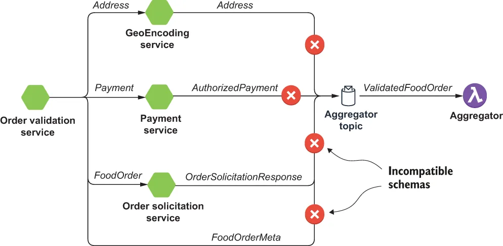
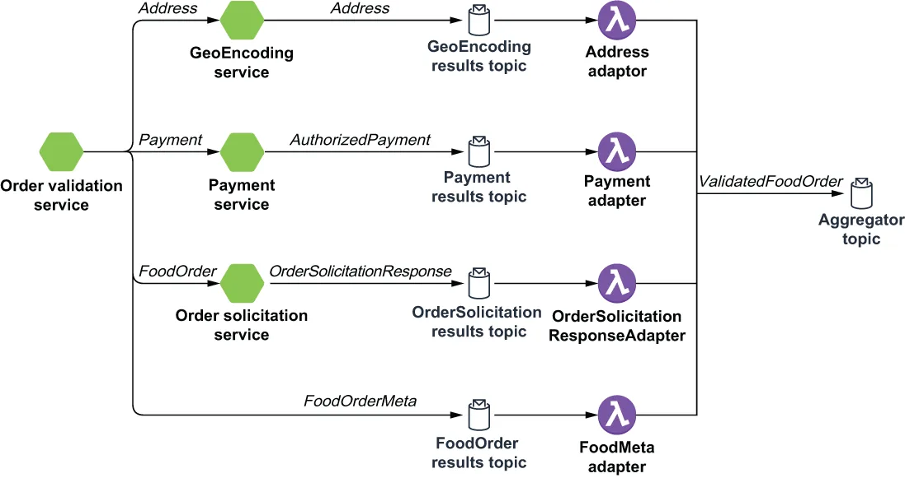

As we saw earlier, the OrderValidationService makes several asynchronous calls to different services, each of which produces messages with different schema types. All of these messages must be combined by the OrderValidationAggregator into a single response. However, a Pulsar function can only be defined to accept incoming messages of a single type, so we cannot publish these messages directly to the service’s input topic, as shown in figure 8.6, as the schemas would not be compatible.
正如我们前面所看到的，OrderValidationService 会向不同的服务发起若干次异步调用，而每个服务所产生的消息都具有不同的 schema 类型。所有这些消息都必须由 OrderValidationAggregator 合并成一条响应。然而，一个 Pulsar 函数只能被定义为接受单一类型的传入消息，因此我们不能把这些消息直接发布到该服务的输入主题上（如图 8.6 所示），因为它们的 schema 并不兼容。

Figure 8.6 Each of the intermediate microservices produce messages with different schema types. Therefore, they cannot publish them directly to the OrderValidationAggregator’s input topic.
图 8.6 每一个中间微服务所产生的消息都具有不同的 schema 类型。因此，它们无法把这些消息直接发布到 OrderValidationAggregator 的输入主题。
To accommodate the consumption of messages with different schemas, the results from each of these intermediate microservices must be routed through a message translator function, which converts these response messages into the same type as the OrderValidationAggregator’s input topic, which, in this case, is the schema shown in listing 8.6. I have chosen to use an object type that is a composite of each of these message types. This approach allows me to simply copy the response from each of the intermediate services directly into the corresponding placeholder inside the ValidatedFoodOrder object.
为了能够消费具有不同 schema 的消息，这些中间微服务各自的结果都必须先经由一个消息转换器（message translator）函数来路由——该函数会把这些响应消息转换成与 OrderValidationAggregator 输入主题相同的类型，在本例中也就是清单 8.6 中所示的那个 schema。我选择使用一个由这些消息类型各自组合而成的对象类型。这种做法让我可以简单地把来自每个中间服务的响应直接复制到 ValidatedFoodOrder 对象中对应的占位字段里。
Listing 8.6 The ValidatedFoodOrder definition
record ValidatedFoodOrder {
FoodOrderMeta meta; ❶
com.gottaeat.domain.resturant.SolicitationResponse food; ❷
com.gottaeat.domain.common.Address delivery_location; ❸
com.gottaeat.domain.payment.AuthorizedPayment payment; ❹
}
❶ The FoodOrderMeta data forwarded from the OrderValidationService
❶ 由 OrderValidationService 转发过来的 FoodOrderMeta 数据。
❷ The response type from the OrderSolicitationService
❷ 来自 OrderSolicitationService 的响应类型。
❸ The response type from the GeoEncodingService
❸ 来自 GeoEncodingService 的响应类型。
❹ The response type from the PaymentService
❹ 来自 PaymentService 的响应类型。
While the logic for consuming each response message type is slightly different, the concept is essentially the same. As you can see in listing 8.7, the logic for handling the AuthorizedPayment messages produced by the PaymentService is straightforward. Simply create an object of the appropriate type, and copy over the AuthorizedPayment object published by the PaymentService into the corresponding field in the wrapper object before sending it to the aggregator for consumption.
虽然消费每一种响应消息类型的逻辑略有不同，但其概念本质上是相同的。正如你在清单 8.7 中所看到的，处理由 PaymentService 所产生的 AuthorizedPayment 消息的逻辑相当直白：只需创建一个适当类型的对象，把 PaymentService 发布出来的 AuthorizedPayment 对象复制到包装对象中对应的字段上，然后把它发给聚合器去消费即可。
Listing 8.7 The PaymentAdaptor implementation
public class PaymentAdapter implements Function<AuthorizedPayment, Void> {
@Override
public Void process(AuthorizedPayment payment, Context ctx)
throws Exception {
ValidatedFoodOrder result = new ValidatedFoodOrder(); ❶
result.setPayment(payment); ❷
ctx.newOutputMessage(ctx.getOutputTopic(),
AvroSchema.of(ValidatedFoodOrder.class)) ❸
.properties(ctx.getCurrentRecord().getProperties()) ❹
.value(result).send();
return null;
}
}
❶ Create the new wrapper object.
❶ 创建新的包装对象。
❷ Update the payment field with the AuthorizedPayment.
❷ 用 AuthorizedPayment 更新 payment 字段。
❸ Publish a message of type ValidatedFoodOrder to the aggregator’s input topic.
❸ 向聚合器的输入主题发布一条 ValidatedFoodOrder 类型的消息。
❹ Copy over the order ID so we can correlate it with the other response messages.
❹ 把订单 ID 复制过来，以便我们能将它与其他响应消息关联起来。
There are similar adaptors for each of the other microservices as well. Once all of the object values have been populated, the order is considered validated and can be published to the validatedFoodOrder topic for further processing.
其他各个微服务也都有类似的适配器。一旦所有对象的值都被填好，这笔订单就被认为是校验通过的，并可以被发布到 validatedFoodOrder 主题以进行后续处理。

Figure 8.7 Each of the intermediate microservices publish their response messages to topics with the appropriate schema type. The associated adapter functions then consume those messages and convert them to the ValidatedFoodOrder schema type expected in the aggregator topic.
图 8.7 每一个中间微服务都把自己的响应消息发布到具有相应 schema 类型的主题上。随后，与之关联的适配器函数消费这些消息，并把它们转换成聚合器主题所期望的 ValidatedFoodOrder schema 类型。
It is worth noting that each of these adaptor functions must consume from a topic that stores the microservice’s respective response messages before publishing the wrapper objects to the OrderValidationAggregator’s input topic. Therefore, you will need to create these response topics and configure the microservices to publish to them, as shown in figure 8.7. In addition to being useful in situations where you need to combine the results of several different Pulsar functions, this pattern can also be used to accommodate the ingestion of data from external systems, such as databases, and translate them into the required schema format for processing.
值得注意的是：这些适配器函数中的每一个，在把包装对象发布到 OrderValidationAggregator 的输入主题之前，都必须先从一个存放着该微服务各自响应消息的主题中消费。因此，你需要创建这些响应主题，并把各个微服务配置为向它们发布消息，如图 8.7 所示。除了在需要合并若干不同 Pulsar 函数结果的场景中很有用之外，这个模式还可以用来承接来自外部系统（例如数据库）的数据摄入，并把它们转换成处理所需的 schema 格式。